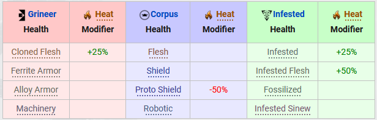
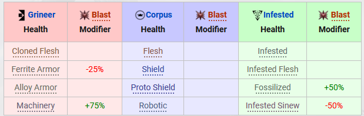

Modding:
-
Weapon:
Physical:
Damage Típus Magyarázat Részletes Effective Impact Ez a Damage fajta a Corpus és a Corrupted enemy típusra a leghatásosabb. Puncture Ez a Damage fajta a Grineer,Corrupted enemy típusra a leghatásosabb. Slash A legtöb enemyípusra hatásos. Infestedekre a laghatásásabb illetve a többi enemyből az alap szintűek ellen. Elemental:
Heat Ez a damage típus Kifejzetten az infesded enemyre hatásos valamint a grineer enemik valamelye, a corpus enemy elgtöbbje rezistens erre a damagetípusra.  Cold Ez a damage típuskifejezetten a grineer és a corpus enemykre hatásos az infested enemy rezistens erre a damagera. Toxin Ez a damage típus kifejezetten a crpus enemyre hatásos, a többi típus valamelyes rezistens rá. Electricity Ez a damaga típus a minden enemy típusra hatásos a corpus és grineer enemikből van amelyik jobban rézékeny rá. A grineerekből vlamelyik viszont kifejezetten rezistens a damagera. Elemental Combo:
Blast Heat + Cold A legtöbb enemyre jó kis szinten nagyobb szinteken már csak a grineer és infested enemyik bizonyos típusaira jó.  Radiation Heat + Electricity A leguniverzálisab elemental combo mivel minden enemy típus érzékeny rá viszont kis szinten ellenállóbbak. Gas Heat + Toxin Ez az elemental combo damage az infestedekre a leghatásosabb valamint a magasabb armorszinten levő enemykre. Magnetic Electricity + Cold Ez a damage fajta a corpus enemyik halála mivel nagyon gyorsan képes levenni az armorjukat és shildjuket. A Többi enemy típusra átlagosan hat. Corrosive Electricity + Toxin Ez a damage típus a grineer és infested enemykre a leghatásosabb, a corpus enemykre nem teljesen hatásos. 
Viral Toxin + Cold Ez a damage típus a grineer és corpus enemyk hpjára van nagy hatással az infestedek átlagosan sebződnek. 
Riven:
A Riven modok olyan modok amelyek eszköz specifikusak. Ezalatt azt értem hogy egy riven csak egy eszközre(fegyverre) jó. A riven voltaképp egy olyan mod ami egyszerre több tulajdonságot ad hozzá az adott fegyverhez. Ezek a tulajdonságok lehetnek pozitívak és negatívak is.
-
Warframe:
Physical:
A Warframe Physical modok azok a modok amelyek a frame fizikai tulajdonságait erősíti. Ezek pl:
HealtPoint -> Ez az érték a frame életpontját módosítja Shield (Vitality)
Shield -> Ez az érték a frame Pajzsát módosítjaEnergy()
Energy -> Ez az érték a frame energyét módosítjaArmor(Flow)
Armor -> Ez az érték a frame ellenállóságát módosítja(Steel Fiber)
Ability:
A warframe ability modok azok a modok ammelyekkel a frame képesságeinek értékét tudjuk módosítani, ezáltal amilyen a frame képességének a legkedvezőbb egyensúlyt felállítani.
Strengt -> A frame képességének erelyét valamint kiosztott damege nagyságát befolyásolja.
Duration -> A frame képességének hatóidejét határozza meg valamint befolyásolja a energia gazdálkodást.
Range -> A frame képességeinek a hatókörét haatározza meg.
Efficiency -> A frame képességeinek az energiaköltségét befolyásolja.
Augment:
A warframe augment modjai alatt azokat a modokat kell érteni amelyek Frame specifikusak. Ez alatt azt kell érteni hogy egy augment mod egy adott frame adott képességét módosítja vagy befolyásolja.
Orbiter:
- Mod's:
- Fusion:
Itt van lehetőséged a modjaid felhúzására endó segítségével. Az eljárás úgy müködik hogy kiválasztod azt a modot amit fel szeretnél húzni utánna ez a mod középre felugrik és megjelenik alatta eghy - és + jel a működésük evidens melyik mit csinál. aztán ugyan ott ahhol ezt megcsinátad jobbra van az hogy mennyi endo és mennyi credit kell ahoz a modszinthez. ha van annyi endo és credit akkor apply fusion ha nincs akkor csökkented vagy cancel fusion.
- Circle:
Itt van lehetőséged a riven modokat forgatni. a metódus hasonló, kiválasztod a rivent és utánna rákattintasz a riven alatt a circle feliratra és ha van eklég kuvád akkor forok és más statok lesznek a rivenen viszont ha nincs elég akkor nem tudsz forgatni :(
- Shell:
Magáért beszél az általad kiválasztott modokat tudod credtitért eladni, és az eladás értékét a sell fülön fogod látni.
- Extract:
Magáért beszél az általad kiválasztott modokat tudod endoért eladni, és az eladás értékét a Extract fülön fogod látni.
- Ayatan:
itt találod a missonok alatt összeszedett scupturékat és az ayatan starokat. itt vanlehetőséged a scupcutrekat starok seggítségével kihúzni ezáltal több endot fognak érni. ezeket a scupturekat a mars:Marboo bazar nevezetű küldin tudod eladni enóért.
Itt találod az összes modot amit eddig összeszedtél. Itt van lehetőséged eladni vagy extraktálni vagy felhúzni a modjaidat illetve forgatni a riven modokat.
A felső sorban van 5 lehetőség. balról jobbra haladva:
- Fusion:
- Incubator:
Itt vannak a petjeid itt tudsz kikeltetni egy macskát vagy egy kutyát. valamint ha az orbiteren sétálsz akkor ő ott fexik.
- Arsenal:
Itt van lehetőséged a framejaidat fegyvereidet gearodat és archvingedet configurálni.
- Basic:
- Epquit:
- Upgrade:
- Apperience:
- Ability(Only fram's):
- Oszlop:
- Warrame:
- Primary:
- Secundary:
- Meele:
- School:
- Ability Weapon:
- Parazon:
- Sor:
- Tenno Loadout:
- Companiton Loadout:
- Gear Loadout:
- Archving Loadout:
- Basic:
- Void Relic's:
- Sentinel Case:
- Foundry:
- Room of Nidus:
- Rom of Operator:
- Room of Lotus: